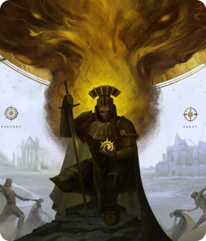

Подробнее о Курсе
Суть уроков - от простого к сложному научить клиента рисовать в программе Adobe Photoshop. Уроки разного уровня сложности: “Листочек” самый простой и базовый, “Растение в горшке” погружает в процесс рисования глубже, а “Хищное растение” самое интересное и сложное.
Какой софт будет использоваться:
Adobe Photoshop на ноутбуке/компьютере Windows/Mac OS + графический планшет или экранный планшет любой марки
Формат проведения:
2 бесплатных и 1 платный урок на обучающей площадке
Чему научитесь
Создавать реалистичные и стилизованные иллюстрации любой сложности

Использовать цифровые инструменты для создания и редактирования изображений
Создавать графические дизайны, используя различные стили и техники

Работать с цветом и светом для создания эффектных изображений

Актуальность
сферы
Еще в 2020 году число людей, увлеченных видеоиграми перевалило за три миллиарда, что составляет больше трети населения всей планеты. Годовой рост игровой индустрии увеличивается примерно на 20%. Это говорит о том, насколько стремительно развивается данная сфера.
Начать учиться бесплатноКакие зарплаты в геймдеве?
Зарплата уровня джун
(до года опыта работы)
Зарплата уровня мидл
(1 - 3 года опыта)
Зарплата уровня сеньор
(от 3 лет)
Программа курса
Результаты студентов
Кураторы курса

Ринат Хабиров — цифровой художник, преподаёт 2D графику в Skills Up School с 2013 года. Имеет большой опыт работы в сфере цифровой графики: реализует творческие идеи в 2D иллюстрациях, анимационных роликах и моушн-графике. Умело сочетает различные техники и приёмы, его иллюстрации отличаются неповторимой атмосферой и высокой техникой исполнения.
Ринат Хабиров — цифровой художник, преподаёт 2D графику в Skills Up School с 2013 года. Имеет большой опыт работы в сфере цифровой графики: реализует творческие идеи в 2D иллюстрациях, анимационных роликах и моушн-графике. Умело сочетает различные техники и приёмы, его иллюстрации отличаются неповторимой атмосферой и высокой техникой исполнения.
Ринат Хабиров — цифровой художник, преподаёт 2D графику в Skills Up School с 2013 года. Имеет большой опыт работы в сфере цифровой графики: реализует творческие идеи в 2D иллюстрациях, анимационных роликах и моушн-графике. Умело сочетает различные техники и приёмы, его иллюстрации отличаются неповторимой атмосферой и высокой техникой исполнения.
Ринат Хабиров — цифровой художник, преподаёт 2D графику в Skills Up School с 2013 года. Имеет большой опыт работы в сфере цифровой графики: реализует творческие идеи в 2D иллюстрациях, анимационных роликах и моушн-графике. Умело сочетает различные техники и приёмы, его иллюстрации отличаются неповторимой атмосферой и высокой техникой исполнения.